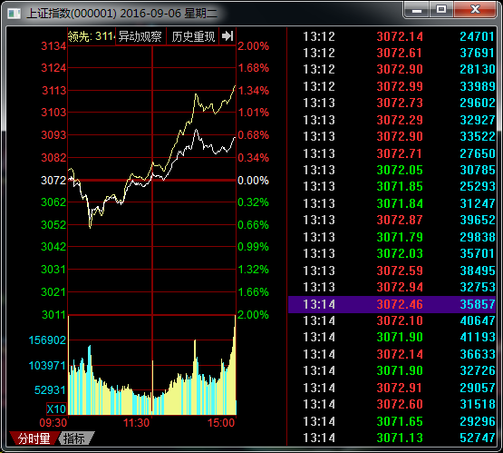
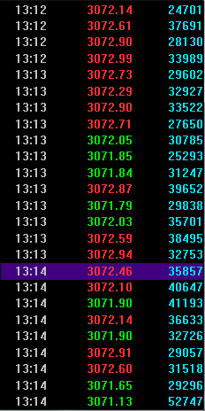
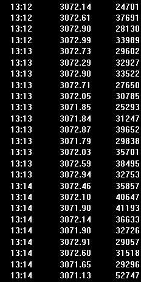
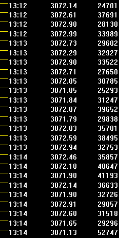
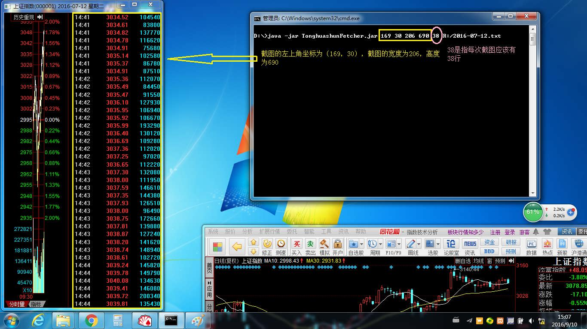
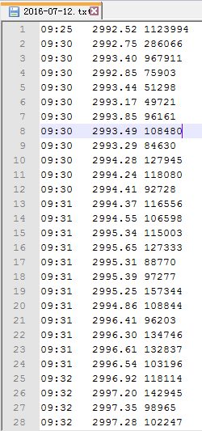

前段时间迷恋华泰证券的猜涨跌游戏，也就是在每个交易日下午1点前下注，押今天上证指数收盘是涨还是跌。本来想做数据挖掘的，但是最近的一些事情让我觉得还是金盆洗手，不再碰金融了。
要做数据挖掘，首先就是要有数据咯。于是我想到，最细的数据就是成交明细了。可是找遍了新浪财经、腾讯财经、和讯财经等网站，都没有找到哪个页面可以查看上证指数的成交明细的。后来发现可以在同花顺软件中查看任何一天的成交明细，如图：

只需要在日K线图上双击一下就能出来这一天的成交明细。
OK，数据源有了，可是这里面的数据怎么导出来呢？又不能复制粘贴，又没有现成的选项导出。
那就用暴力手段啦——OCR！既然能够给人看，那么计算机就应该能够通过屏幕读词识别的方式把数据都弄下来。于是我就找Java有没有现成的OCR库。别说，还真有，貌似最流行的就是Tess4j。于是我就用Tess4j试试，结果效果很不理想。Tess4j会把图片中所有的“3”都识别为”8″。这个我可不能忍啊！
于是我只能自己实现一个针对同花顺的OCR程序了。同花顺的成交明细里面，无非就是14个字符，分别是阿拉伯数字的0~9，表示时间的“:”、表示小数点的“.”、表示数据不详的“-”还有表示分割的空格。而且开心的是，出现在不同地方的同一个字符都是像素级别地相同。那就好办啦！
==================阶段一：基本原理=================
首先肯定是屏幕截图。这个用Java做很容易，不详解，接下来的代码中有。
假设现在已经截取了窗口中的所有成交明细，如图：

那么接下来就是二值化。所谓二值化，就是把所有字符都变成白色，而把背景都变成黑色。从图中可以看出，字符部分无非就是四种颜色，即——灰色、红色、绿色和蓝色。不过事实上共5种颜色，还有一种是白色，当价格为平盘的时候使用这种颜色。经过取色得到这五种颜色具体的RGB值分别是：灰色（#C0C0C0）、红色（#FF3232）、绿色（#00E600）、蓝色（#02E2F4）和白色（#FFFFFF）。那么就挨个像素遍历，如果某个像素是这五种颜色中的一种，那么就把该像素点设置为白色，否则就设置为黑色。
上面的图片经过二值化处理后的图片就成了这样：

接下来，就是要分割行。将图片分割成一行一行，那么就更加容易处理。分割的算法其实也很简单。我定义一个变量y，表示图片的y坐标。然后假想在纵坐标为y的地方有一条水平直线。y从0逐渐增大，那么这条水平线就从图片最顶端开始向下扫描。如果y增大到某个值的时候，水平线扫描到该高度上有个点的颜色不是黑色，那么就认为这个y是一行的开始，并把这个y记录下来，同时y增大15。为何要增大15呢？这是因为经过测算发现，每行字符本身的高度大约是11个像素，而行与行直接的高度差大约是19个像素。那么，当我找到一行的最顶端时，向下跳跃15像素的位置，就应该是这一行之后而下一行之前。用这个算法就可以确定每一行的起始高度。确定的每行起始高度如下图：

上面每一条黄线所在的纵坐标就是这一行开始的纵坐标。当然，真实的处理中是不会画黄线的，这里只是为了直观。
既然确定了每一行的起始位置，那么接下来就是识别每一行的内容。以第一行为例，它相当于是这样的一张图片：
那么，我就准备如下的14张图片：


定义一个变量x，x从0逐渐增大。对于每一个x，依次把这14张图片放置到“行图片”的(x,0)的位置上，如果能够重合，那么说明“行图片”中(x,0)的位置是对应的某个字符，同时x加上该字符图片的宽度。
OK，算法是不是很简单？哈哈~~
===================阶段二：代码实现=================
代码分为TradeTick.java、TonghuashunFetcher.java和TonghuashunFetcherTest.java三个文件。
TradeTick.java：
package cn.carrotech.klinefetch.model;
/**
* 一笔交易明细
*/
public class TradeTick
{
//时间
private String time;
//价格
private double price;
//成交量
private int volume;
/**
* 获取时间
* @return 时间
*/
public String getTime()
{
return time;
}
/**
* 设置时间
* @param time 时间
*/
public void setTime(String time)
{
this.time=time;
}
/**
* 获取价格
* @return 价格
*/
public double getPrice()
{
return price;
}
/**
* 设置价格
* @param price 价格
*/
public void setPrice(double price)
{
this.price=price;
}
/**
* 获取成交量
* @return 成交量
*/
public int getVolume()
{
return volume;
}
/**
* 设置成交量
* @param volume 成交量
*/
public void setVolume(int volume)
{
this.volume=volume;
}
@Override
public boolean equals(Object obj)
{
if(!(obj instanceof TradeTick))
return false;
TradeTick tick=(TradeTick)obj;
if(time==null)
{
if(tick.getTime()!=null)
return false;
}
else
{
if(!time.equals(tick.getTime()))
return false;
}
if(getPrice()!=tick.getPrice())
return false;
if(getVolume()!=tick.getVolume())
return false;
return true;
}
}
TonghuashunFetcher.java：
package cn.carrotech.klinefetch.fetcher;
import java.awt.AWTException;
import java.awt.Rectangle;
import java.awt.Robot;
import java.awt.event.InputEvent;
import java.awt.event.KeyEvent;
import java.awt.image.BufferedImage;
import java.io.InputStream;
import java.util.ArrayList;
import java.util.Date;
import java.util.List;
import javax.imageio.ImageIO;
import cn.carrotech.klinefetch.model.TradeTick;
/**
* 用于核新同花顺的抓取器
*/
public class TonghuashunFetcher
{
//每一行文字的高度（要大于文字本身的高度11，并小于与下一行的距离19）
private static final int TICK_LINE_HEIGHT=15;
//字符与图片文件对应表
private static final String[][] DIGIT_FILE_MAP={{"0","0.png"},{"1","1.png"},{"2","2.png"},{"3","3.png"},
{"4","4.png"},{"5","5.png"},{"6","6.png"},{"7","7.png"},{"8","8.png"},{"9","9.png"},{":","colon.png"},
{".","dot.png"},
{" ","space.png"},
{"0","-.png"}};
//图片文件根目录
private static final String DIGIT_FILE_BASE="/resources/TonghuashunDigits/";
//一开始按page up键的次数
private static final int PAGE_UP_PRESS_COUNT=30;
//字符
private static String sDigits[];
//字符图片
private static BufferedImage[] sDigitImages;
static
{
//建立字符与图片映射
sDigitImages=new BufferedImage[DIGIT_FILE_MAP.length];
sDigits=new String[DIGIT_FILE_MAP.length];
try
{
for(int i=0;i<DIGIT_FILE_MAP.length;i++)
{
sDigits[i]=DIGIT_FILE_MAP[i][0];
String path=DIGIT_FILE_BASE+DIGIT_FILE_MAP[i][1];
InputStream input=TonghuashunFetcher.class.getResourceAsStream(path);
sDigitImages[i]=ImageIO.read(input);
}
}
catch(Exception ex)
{
ex.printStackTrace();
}
}
//截图的窗口的x坐标
private int captureX;
//截图的窗口的y坐标
private int captureY;
//截图的窗口的宽度
private int captureWidth;
//截图的窗口的高度
private int captureHeight;
//最大行数
private int lineCount;
//机器人
private Robot robot;
public TonghuashunFetcher() throws AWTException
{
robot=new Robot();
}
/**
* 获取截图的x坐标
*
* @return x坐标
*/
public int getCaptureX()
{
return captureX;
}
/**
* 设置截图的x坐标
*
* @param captureX x坐标
*/
public void setCaptureX(int captureX)
{
this.captureX=captureX;
}
/**
* 获取截图的y坐标
*
* @return y坐标
*/
public int getCaptureY()
{
return captureY;
}
/**
* 设置截图的y坐标
*
* @param captureY y坐标
*/
public void setCaptureY(int captureY)
{
this.captureY=captureY;
}
/**
* 获取截图的宽度
*
* @return 宽度
*/
public int getCaptureWidth()
{
return captureWidth;
}
/**
* 设置截图的宽度
*
* @param captureWidth 宽度
*/
public void setCaptureWidth(int captureWidth)
{
this.captureWidth=captureWidth;
}
/**
* 获取截图的高度
*
* @return 高度
*/
public int getCaptureHeight()
{
return captureHeight;
}
/**
* 设置截图的高度
*
* @param captureHeight 高度
*/
public void setCaptureHeight(int captureHeight)
{
this.captureHeight=captureHeight;
}
/**
* 获取最大行数
* @return 最大行数
*/
public int getLineCount()
{
return lineCount;
}
/**
* 设置最大行数
* @param lineCount 最大行数
*/
public void setLineCount(int lineCount)
{
this.lineCount=lineCount;
}
/**
* 获取指定日期的所有交易明细，按时间升序排序
* @param date 日期
* @return 所有的交易明细
*/
public List<TradeTick> fetchTradeTicks(Date date)
{
//激活交易明细窗口
mouseClick(captureX+captureWidth/2,captureY+captureHeight/2,InputEvent.BUTTON1_MASK);
//滚动交易明细到最上面
for(int i=0;i<PAGE_UP_PRESS_COUNT;i++)
keyInput(KeyEvent.VK_PAGE_UP);
//截图区域
Rectangle captureArea=new Rectangle(captureX,captureY,captureWidth,captureHeight);
//要返回的结果
List<TradeTick> result=new ArrayList<TradeTick>();
//新增行数小于lineCount的次数
int lessThanLineCountTimes=0;
while(true)
{
//截图
BufferedImage image=robot.createScreenCapture(captureArea);
//获取图片内的所有交易明细
List<TradeTick> ticks=recognizeTradeTicks(image);
int resultSize=result.size();
int ticksSize=ticks.size();
//重合的行数
int overlapLineCount=Math.min(resultSize,ticksSize);
for(;overlapLineCount>0;overlapLineCount--)
if(isListOverlapAt(result,resultSize-overlapLineCount,ticks))
break;
int newLineCount=(ticksSize-overlapLineCount);
System.out.println("newLen="+newLineCount);
if(newLineCount>0)
{
//ticks中从overlapLineCount开始的元素都要追加到result之后
for(int i=overlapLineCount;i<ticksSize;i++)
result.add(ticks.get(i));
}
else
{
TradeTick lastTick=result.get(resultSize-1);
if("15:00".compareTo(lastTick.getTime())<=0)
break;
if("14:59".compareTo(lastTick.getTime())<=0&&lastTick.getVolume()==0)
break;
}
if(newLineCount<lineCount)
{
lessThanLineCountTimes++;
if(lessThanLineCountTimes>1)
throw new RuntimeException("need restart!");
}
keyInput(KeyEvent.VK_PAGE_DOWN);
sleep(50);
}
System.out.println(result.size());
return result;
}
//firstList从index处之后的内容是否为secondList开头的内容
private <T> boolean isListOverlapAt(List<T> firstList,int index,List<T> secondList)
{
//firstList剩余的元素个数
int restLen=firstList.size()-index;
//secondList没有这么多元素，肯定不重合
if(secondList.size()<restLen) return false;
for(int i=0;i<restLen;i++)
{
T first=firstList.get(index+i);
T second=secondList.get(i);
if(first==null)
{
if(second!=null)
return false;
}
else
{
if(!first.equals(second))
return false;
}
}
return true;
}
// 给定一张图片，识别其中所有的交易明细
private List<TradeTick> recognizeTradeTicks(BufferedImage image)
{
// 转成黑白图
image=transformToBlackAndWhite(image);
// 要返回的结果
List<TradeTick> ticks=new ArrayList<TradeTick>();
int width=image.getWidth();
int height=image.getHeight();
for(int y=0;y<height;y++)
{
for(int x=0;x<width;x++)
{
int rgb=image.getRGB(x,y)&0x00FFFFFF;
// 如果某一个y上面存在一个点不是黑色，那么这个y下面就有一行tick
if(rgb!=0)
{
TradeTick tick=recognizeATradeTick(image,y);
ticks.add(tick);
// 直接跳到下一行
y+=TICK_LINE_HEIGHT-1;
break;
}
}
}
return ticks;
}
// 把彩色图片转成黑白图片
private BufferedImage transformToBlackAndWhite(BufferedImage image)
{
int width=image.getWidth();
int height=image.getHeight();
BufferedImage newImage=new BufferedImage(width,height,BufferedImage.TYPE_4BYTE_ABGR);
for(int y=0;y<height;y++)
{
for(int x=0;x<width;x++)
{
int rgb=image.getRGB(x,y)&0x00FFFFFF;
// #C0C0C0是时间的颜色，#FF3232是涨时的价格颜色，#00E600是跌时的价格颜色，#FFFFFF是平时的价格颜色，
// #02E2F4为成交量的颜色
if(rgb==0xC0C0C0||rgb==0xFF3232||rgb==0x00E600||rgb==0xFFFFFF||rgb==0x02E2F4)
newImage.setRGB(x,y,0xFFFFFF);
else
newImage.setRGB(x,y,0x000000);
}
}
return newImage;
}
// 在图片指定的y坐标出识别出一笔交易明细
private TradeTick recognizeATradeTick(BufferedImage image,int startY)
{
// 所有识别出的字符
StringBuilder sb=new StringBuilder();
int width=image.getWidth();
// 从左到右扫描
for(int x=0;x<width;x++)
{
// 依次尝试每一个字符
for(int i=0;i<sDigitImages.length;i++)
{
// 吻合
if(isImageEqual(image,sDigitImages[i],x,startY))
{
sb.append(sDigits[i]);
x+=sDigitImages[i].getWidth()-1;
break;
}
}
}
String raw=sb.toString().trim();
String[] items=raw.split("\s+");
if(items.length!=3) throw new RuntimeException("wrong recognization :'"+raw+"'");
TradeTick tick=new TradeTick();
tick.setTime(items[0]);
tick.setPrice(Double.parseDouble(items[1]));
tick.setVolume(Integer.parseInt(items[2]));
return tick;
}
// 判断在图片的指定位置是否与小图重合
private boolean isImageEqual(BufferedImage image,BufferedImage subImage,int startX,int startY)
{
// 图片大小
int width=image.getWidth();
int height=image.getHeight();
// 子图大小
int subWidth=subImage.getWidth();
int subHeight=subImage.getHeight();
// 遍历子图所有像素
for(int subY=0;subY<subHeight;subY++)
{
for(int subX=0;subX<subWidth;subX++)
{
// 坐标映射到主图上
int x=startX+subX;
int y=startY+subY;
// 越界了肯定不重合
if(x>=width||y>=height) return false;
// 颜色不同肯定不重合
int rgb=image.getRGB(x,y)&0x00FFFFFF;
int subRgb=subImage.getRGB(subX,subY)&0x00FFFFFF;
if(rgb!=subRgb) return false;
}
}
return true;
}
//在指定位置点击鼠标
private void mouseClick(int x,int y,int button)
{
robot.mouseMove(x,y);
sleep(50);
robot.mousePress(button);
sleep(50);
robot.mouseRelease(button);
sleep(50);
}
// 按指定的键
private void keyInput(int keyCode)
{
robot.keyPress(keyCode);
sleep(50);
robot.keyRelease(keyCode);
sleep(50);
}
//延时
private void sleep(long interval)
{
try
{
Thread.sleep(interval);
}
catch(InterruptedException ex)
{
ex.printStackTrace();
}
}
}
TonghuashunFetcherTest.java：
import java.io.FileOutputStream;
import java.io.PrintWriter;
import java.util.List;
import cn.carrotech.klinefetch.fetcher.TonghuashunFetcher;
import cn.carrotech.klinefetch.model.TradeTick;
public class TonghuashunFetcherTest
{
public static void main(String[] args) throws Exception
{
//===================参数处理===================
if(args.length<6)
{
System.out.println("usage: <captureX> <captureY> <captureW> <captureH> <lineCount> <outputFile>");
return;
}
int captureX=Integer.parseInt(args[0]);
int captureY=Integer.parseInt(args[1]);
int captureW=Integer.parseInt(args[2]);
int captureH=Integer.parseInt(args[3]);
int lineCount=Integer.parseInt(args[4]);
String outputFile=args[5];
//====================初始化=====================
PrintWriter writer=new PrintWriter(new FileOutputStream(outputFile));
TonghuashunFetcher fetcher=new TonghuashunFetcher();
fetcher.setCaptureX(captureX);
fetcher.setCaptureY(captureY);
fetcher.setCaptureWidth(captureW);
fetcher.setCaptureHeight(captureH);
fetcher.setLineCount(lineCount);
List<TradeTick> ticks=fetcher.fetchTradeTicks(null);
//====================输出======================
for(TradeTick tick:ticks)
writer.println(String.format("%st%.2ft%s",tick.getTime(),tick.getPrice(),tick.getVolume()));
writer.close();
}
}
当然，还需要把上面的14张图片放置在/TonghuashunDigits/目录下。
整个项目可以点击下载：TonghuashunFetcherTest.rar。
代码里还是考虑到了很多实际操作时的问题，比如需要自动按page up键和page down键。同时还需要考虑因为网络延时导致页面滚动滞后等问题。当程序在抓取交易明细的时候，如果程序抛出异常“need restart!”，那么基本上就是采集过程中出现了某些错误。
====================阶段三：采集数据试验===================
把项目发布成jar包（TonghuashunFetcher.jar），假设放在D盘根目录下，那么可以按图中这样的方式来使用：

程序运行完之后，可以看到采集的数据以及保存在文件中：
